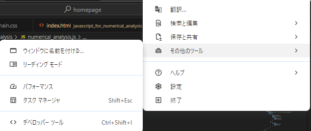
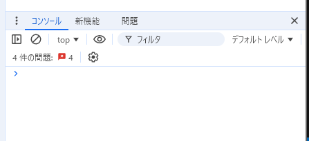

JavaScriptで数値解析
JavaScriptの簡単な入門と，JavaScriptを用いた簡単な数値解析を行う．
まず，定番の「Hello World」は以下をJsファイルに書くことで実行できる．
console.log("Hello World!");
console.logなのでコンソールに出力されるのですが，コンソールはウェブページ上で
開発者モードを開くとコンソールタブがあるので，そちらで確認できる．
具体的には，Chromeでは右上のケバブメニューをクリックし，

step1
デベロッパーツールを選択する．

step2
F12キーを押すことでもデベロッパーツールを起動できる．
console.log("Hello")
console.log("World!")
しかし，次の場合は改行がセミコロンを意味しない．
console.log(1 +
2 +
3);
しかし，普通はセミコロンはつけるものである．
// この行はコメントになる．
console.log("hoge"); // hogeがコンソールに出力される．
複数行のコメントは/*で始まり，*/で終わる．
/*
コメントだお
いっぱいコメント
たくさんのコメント
数え切れないコメント
*/
変数を宣言するには以下のようにします．
let message;
=を用いてデータを代入することが出来ます．
let message;
message = "Hello";
あなたが期待するように以下のようにも入力できます．
let message = "Hello";
let name = "Jesus", age = "2024", message = "true love";
letは再宣言が不可能である．つまり
let where = "do we come from?";
let what = "are we?";
let where = "are we going?";
とすると，
SyntaxError: Identifier 'where' has already been declared
というエラーがでる．
var message;
しかし，大きな違いとして，再宣言が可能である．
var where = "do we come from?";
var what = "are we?";
var where = "are we going?";
としても問題ないのである．
個人的にはバグを引き起こすことになり得るので非推奨である．
const math = "good";
const level = "9999";
さて次に，データ型について解説しよう．
// エラーなし
let message = "hello";
message = 999999;
つまり，JavaScriptは動的型付けなのである．
let n = 2 * 4; // n = 8
let n = 10 / 2; // n = 5
let n = 1 / 3; // n = 0.3333333333333333
let n = 1 / 0; // n = Infinity
let n = -1 / 0; // n = -Infinity
let n = "not a number" / 1; // n = NaN
和
差
積
商
数値1:
数値2:
計算する
let breakfast = "bread";
if (breakfast == "rice") {
console.log("So Good!");
} else {
console.log("You are died");
}
これはbreakfastがriceならSo Good!が出力され，そうでないならYou are diedが出力される．
なにかプログラミング言語を触れたことがある人なら馴染み深いであろう．
いくつかの条件をテストするにはelse ifを用いる．
let age = 100;
if (age < 1000) {
console.log("young");
} else if (age > 10000) {
console.log("old");
} else {
console.log("normal");
}
三項演算子?
let result = condition ? value1 : value2;
conditionが評価され，真であればvalue1が返ってきて，そうでなければ，value2が返ってくる．
let akaten = (score < 60) ? "赤点だよ" : "提出物だしてる？";
これはscoreが60未満であればakatenに"赤点だよ"が代入され
60以上だと"提出物だしてる？"が代入される．
while (condition){
// 処理を書く
}
conditionがtrueの間処理の部分が実行される．
for (begin; condition; step){
// 処理を書く
}
大抵の場合以下のようにする．
for (let i = 0; i < 10; i++){
console.log(i);
}
/*
出力は
0
1
2
3
4
5
6
7
8
9
*/
break文を挿入するとループを脱出することができる．
for (let i = 0; i < 10000; i++) {
console.log(i);
if (i == 3) break;
}
/*
出力は
0
1
2
3
*/
continue文は次のループにする命令である．
for (let i = 0; i < 20; i++) {
if (i % 5 != 0) {
continue;
}
console.log(i);
}
/*
出力は，
0
5
10
15
*/
次に，関数について説明しよう．
function function_name(argument1, argument2,...) {
// 処理を書く
return return_value;
}
returnや引数は省略することが出来る．
function greet(name) {
return "Hello, " + name + "!";
}
console.log(greet("Alice")); // "Hello, Alice!"
関数内で宣言された変数は，関数内でのみ参照可能です．
また，関数の外にある変数を参照することができ，更に変更することも出来ます．
let number = 666;
function hoge() {
number = 10;
}
console.log(number); // 666
hoge();
console.log(number); // 10
次にJavaScriptを用いて数値解析を行ってみよう．最初に
次の微分方程式を考えてみよう．
\[ \frac{\text{d}y}{\text{d}t} = ky \]
これは指数関数的な成長などを表す基本的な方程式である．これ自体は
簡単に解ける微分方程式である．実際\(y(0) = 1\)とすると
\[ y(t) = e^{kt} \]
となる．\(k\):
\(dt\):
グラフをプロットする
次に
\[\frac{\text{d}^{2}y}{\text{d}t^{2}} = -\omega^2 y \]
という，単振動の微分方程式を考えよう．この方程式の解はよく知られていて，
\[ y(t) = A\cos(\omega t) + B\sin(\omega t)\]
で与えられる．
参考サイト
javascript.info オイラー法